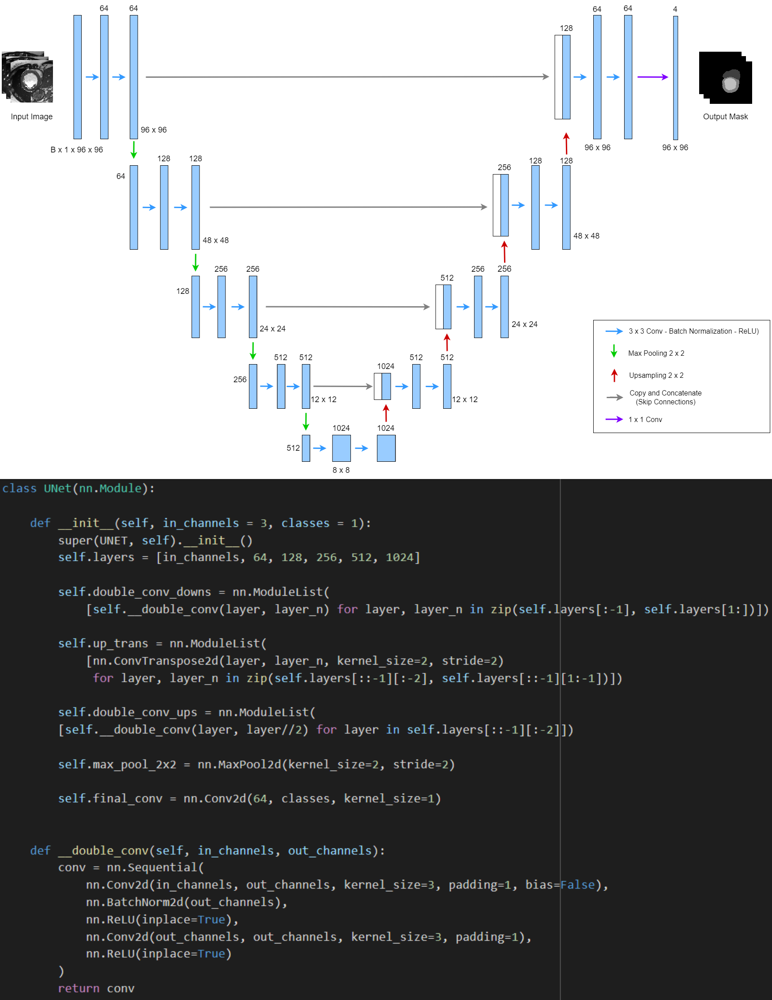

Implemented a multitude of regression-based ML models on multiple securities using basic OHLC securities data and a further feature engineered dataset to predict future securities’ close price and technical indicators.
Implemented the predictions of the ML models as trading signals into a multitude of model-predicted stock trading strategies (SMA crossover, RSI readings, MACD crossover)
Backtested the model-predicted stock trading strategies over the timeframe of 1st January 2020 to 31st December 2020. Evaluated the amount of returns the ML models are able to generate on a variety of securities.
Collated the results and wrote a formal 68-page report describing the design, implementation, experimentation, results, implications, and conclusion of the project
Covid Volunteer Shoppers Application
Software engineered a volunteer personal shopper application for use during the Covid-19 pandemic
Implemented a version of the application that contained a majority of the functional and technical requirements.
Created a wireframe prototype that displayed the key pages of the application.
Wrote the document containing the functional, and non-functional requirements for implementation.
CMR Image Segmentation

Performed semantic segmentation of cardiovascular magnetic resonance images to assess cardiac chamber volume and mass for cardiovascular diseases.
Evaluated different types of CNN architectures for the task and implemented a U-Net architecture for the task.
Created a report presenting our implementation, findings, analysis, and conclusion.
Development of an automated system of financial data extraction, aggregation, transformation, reconciliation, and reporting for one of the largest Indonesian E-Commerce firms
Associate Assistant
PwC Indonesia
October 2022 - January 2023
Contributed to the implementation of an automated system of financial data extraction, aggregation, transformation, and reporting for one of the largest Indonesian E-Commerce firms
Ensured and rectified aspects of the automated system to remain accurate with the data and logic of the client
I am a recent BSc Computer Science graduate at the University of Birmingham and an avid learner with multiple areas of interest.
I personally hold interests in the areas of data analysis, data visualization, machine learning, and neural networks. Outside of these fields, I also hold interests in reading, learning, economics, and stock trading.
I have a native proficiency in English and a professional working proficiency in Bahasa Indonesia.
Outside of University life I also hold positions in multiple student organizations. I was a member in Action Against Homelessness, Computer Science Society, Investment Society, and Game Development Society during my time at the University of Birmingham. During my high school years at SPH Kemang Village, I was the Vice-President of The Lifeline Project and a member of the senior school football team.
I am proficient in several technical areas such as: Python, Scala, Apache Spark, Alteryx, SQL, Power BI, Figma, and Jira. I am also proficient in web programming where I am able to use: HTML, CSS, JavaScript, frameworks such as ASP.NET, and libraries such as React.
I also hold certifications such as the Microsoft Certified: Power BI Data Analyst Associate and the Microsoft Certificate: Azure Fundamentals.
I have also completed my International Baccalaureate diploma at SPH Kemang Village and was a member of the Student Council.